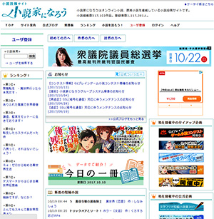
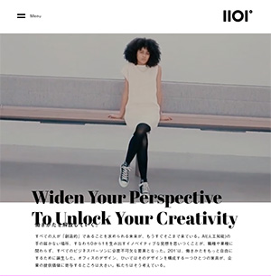
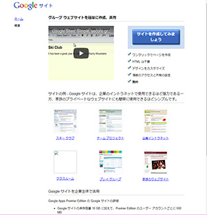

小説投稿サイト「小説家になろう」は自分で執筆した小説を簡単に掲載することができるサイトです。定期的にコンテストなども開催しており、コンテストで優秀賞に選ばれたり掲載した小説の人気が出ると書籍化されたりすることがあります。”なろう作家”と呼ばれる作家さんも多くいらっしゃいます。デジハリ文芸サークルの投稿作品もありますので興味がある方は是非！

DRAFT社の『201°』はオフィス家具ブランドです。従来の日本家具から少しだけ発想を変えて作るということから人間の視界と言われる200°から１°だけ足した『201°』という名をつけたそうです。デザインやアニメーションはシンプルながらこだわりが垣間見えるWebサイトだと個人的に思います。初見の感想は”ぬるぬる動いてすごい。”

Googleサイトはhtml不要でウェブサイトを作成することができるサイトです。クラブや企業イントラネットにも使用できる一方、家族用のサイトを作成できるなど、幅広い用途に使用できます。